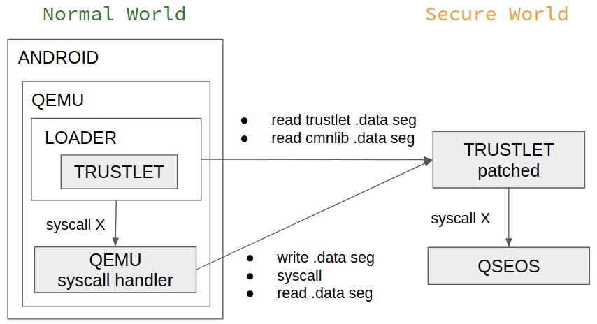

Author:wnagzihxa1n
E-Mail:wnagzihxa1n@gmail.com
上周的周报最后面说接下来学习下TrustZone，前几天有一篇高通芯片漏洞的文章
其实今年六月份作者就已经作过相关的分享《The road to Qualcomm TrustZone apps fuzzing by Slava Makkaveev》
大概的意思就是：通过一系列漏洞对存在漏洞的TA进行Patch，使其计算的数据能够返回给REE，这样就可以曲线救国在REE侧对TEE进行Fuzz，更加具体的操作细节我还在跟李神探学习，希望之后能够单独写一系列文章讲讲TrustZone相关的漏洞分析及安全防护技术

这个会议所有的议题Slide可以在这下载
2019 POC关于Safari的议题，来自Blade Team
哈喽，ChakraCore:))
现在学习浏览器的环境真好，随处都是资料
官方文档
有两个很不错的议题
Using the JIT vulnerability to Pwning Microsoft Edge
Attacking Edge Through the JavaScript Just-In-Time Compiler
下面的文章我现在是打印出来每天上下班地铁上读，来回快两小时不用起来怪可惜的，然后睡前再看个半小时，感谢我司免费打印！
0x9A82 - Edge Type Confusion利用：从type confused到内存读写
0x9A82 - Edge Type Confusion利用：从内存读写到控制流程
0x9A82 - 对Edge浏览器的js解析引擎Chakra漏洞CVE-2017-8548的分析
zs0zrc - CVE-2018-8372
zs0zrc - ChakraCore基础知识笔记
walkerfuz - 从CVE-2018-8355零基础学Chakracore漏洞利用
sakura - case study:cve-2017-0234
elli0tn0phacker - Chakra漏洞调试笔记1 - ImplicitCall
elli0tn0phacker - Chakra漏洞调试笔记2 - OpCode Side Effect
elli0tn0phacker - Chakra漏洞调试笔记3 - MissingValue
elli0tn0phacker - Chakra漏洞调试笔记4 - Array OOB
elli0tn0phacker - Chakra漏洞调试笔记5 - CVE-2019-0861复现
今年Bluehat百度安全实验室关于挖掘Windows内核信息泄露的分享《如何在3个月发现12个内核信息泄露漏洞》，以下一个是视频，一个是Slide
IDA最近的更新都让人很想买新的Release啊，不知道啥时候能有Leak，话说有段时间没有新的Leak了，师傅们给我来一份？
关于使用新的接口来实现反混淆《Hex-Rays Microcode API vs. Obfuscating Compiler》，这个很强大，平时逆向协议比较多的同学可以重点关注
再次读泉哥的《安全研究者的自我修养》，常看常新，能够反思自己这段时间是否按照过来人的建议去学习，改正没有做好的地方
第七条尤其有感触：
7、进入研究者团队或社区，互相学习
国外的交流氛围会比国内的更好一些，也更愿意分享。
很多时候自己的交流圈，大多是一些熟识的同行，或者同事，一般可交流的人还是比较少的。
经常在网上看到不少人会问，如何认识xx大牛、黑客，但其实很多时候却是：努力提高自己的专业能力，圈子最终会吸纳你进去认识更多圈内人。
我现在的技术还是太弱了，不够专注，学习的效率也不够高，希望能通过不断的学习来改进
16寸的MacBook Pro，买不起的我只能YY一下

最后，下个月就是圣诞节了，不知道给女朋友买什么圣诞礼物的，我这里有个建议：圣诞日历，有护肤，香氛，美妆，玩具，零食等多种类型，圣诞日历有24个格子，每个格子里面有这一家品牌自家这一年卖得比较好或者当家明星产品，不过一般都是Full Size和Travel Size组合，然后每天拆一个格子，就可以拆到平安夜，这个点不少品牌的日历都抢完了，可以去淘宝找代购或者海淘，老外真会玩
话说我每次安全周报都写这么多东西，搞的好像每天上班我都在学习不干活一样，是不是酌情写一两句就好了:((